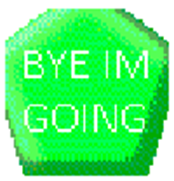

"Going" is the Exit Button replacement in "ThatCoolModderGuys Basics in Mods and Edits!"(/"TCMG").
Aliases
Going, GOING, Go, ByeByeButton.
Appearance
Going appears as a green pentagon with white text on it reading "BYE IM GOING" or "NO STAY!".
Gallery

Trivia
- Going doesn't like being alone.
- Going uses It/Its.
Return to Main Page